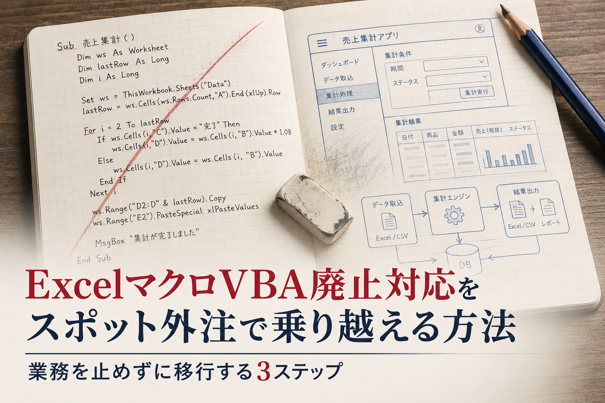
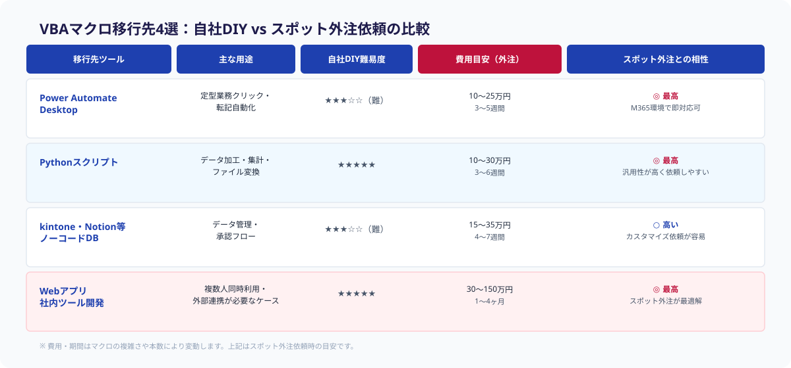
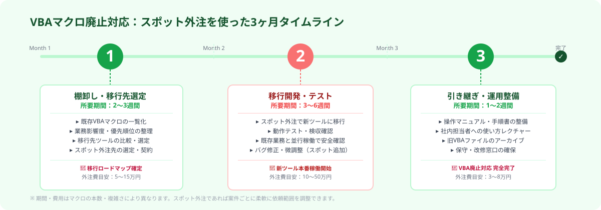

ExcelマクロVBA廃止対応をスポット外注で乗り越える方法｜業務を止めずに移行する3ステップ
ExcelマクロVBAの廃止・ブロック対応は、スポット外注のエンジニアに3ステップで丸ごと依頼するのが最短解です。棚卸しと移行先の選定から開発・引き継ぎドキュメント整備まで、社内IT担当ゼロでも業務を止めずに移行できます。
本記事は2026年8月時点の情報に基づいています。
「VBAが動かなくなる前に動きたいが、何から始めれば…」という段階でも大丈夫です
ANKENのエンジニアが棚卸しから移行先の選定まで一緒に整理します。初回相談は無料、しつこい営業は一切ありません。
無料で相談する →VBAマクロ廃止・ブロック問題の実態
2022年以降、Microsoftはセキュリティ強化のためインターネット由来のOfficeファイルに含まれるVBAマクロを既定でブロックする方針を打ち出しました。これにより、メールで受け取ったExcelファイル・共有サーバー上のブック・社外から持ち込まれたファイルのVBAが実行できなくなるケースが相次いでいます。
さらに2026年現在、多くの企業が長年使ってきた基幹業務マクロの保守に行き詰まっています。「VBAを書いていた担当者が退職した」「コードが属人化していて誰も触れない」「セキュリティポリシーでマクロを全面禁止にする方針が出た」といった声が、発注ナビなどの案件情報にも多数見受けられます。
最も深刻なのは「いつ止まるかわからない不確実性」です。今日は動いていても、次回のWindows・Office更新後に突然動かなくなるリスクを抱えたまま業務が続いている——これが多くの中小企業の現状です。

移行先の選択肢は大きく4つあります。Power Automate Desktopは定型のクリック・転記自動化に向いており、M365環境があればスポット外注との相性が最高です。Pythonスクリプトはデータ加工・集計・ファイル変換に強く、汎用性が高く依頼しやすい点が魅力です。kintone・Notionなどノーコードツールはデータ管理や承認フローの置き換えに適しており、カスタマイズ依頼も容易です。Webアプリ（社内ツール開発）は複数人同時利用や外部連携が必要なケースに最適で、スポット外注が最も力を発揮する領域です。
スポット外注でVBA移行を進める3ステップ
「移行したいけれど何から手をつければいいかわからない」——その状態でも、以下の3ステップで整理すれば動き出せます。スポット外注のエンジニアは各ステップを単発のタスクとして受けることができるため、全工程を一社に丸投げする必要はありません。

STEP1｜VBAマクロの棚卸しと移行先の選定をスポット外注で実施する
まず、社内で使われているVBAマクロを洗い出し、①業務への影響度（止まったら困る度合い）②コードの複雑さ③移行の優先順位の3軸で整理します。この棚卸し作業自体をスポット外注のエンジニアに依頼できます。現場の業務担当者へのヒアリングだけで進められるため、社内にITの専門家がいなくても問題ありません。
棚卸し完了後、マクロごとに最適な移行先を選定します。「このマクロは月1回しか使わないからPythonスクリプトで十分」「毎日10人が使うこの集計ツールはkintoneに移した方が長持ちする」といった判断をエンジニアと一緒に行います。
費用・期間の目安：棚卸し・選定フェーズのみなら5〜15万円・1〜2週間が一般的です。マクロの本数が多い（20本以上）場合や、基幹業務への影響が大きい場合は期間が伸びることがあります。
STEP2｜スポット外注で移行開発を依頼する
選定した移行先に合わせて、いよいよ開発を発注します。スポット外注の強みは「1マクロ単位・1機能単位でタスクを切り出せる」点です。全部まとめてSIerに頼む必要はなく、優先度の高いマクロから順番に依頼していくことができます。
開発の流れは概ね「要件定義 → 実装 → テスト → 納品」ですが、スポット外注では各工程を同じエンジニアに連続で依頼するか、工程ごとに分けて依頼するかを柔軟に選べます。社内の業務担当者が「こういう動きをしてほしい」と説明できれば、要件定義もエンジニアがサポートしてくれます。
移行先別の費用目安：Power Automate Desktop / Python：10〜30万円・3〜6週間。kintone・ノーコードツール：15〜35万円・4〜7週間。Webアプリ（社内ツール）：30〜150万円・1〜4ヶ月。
STEP3｜移行後の運用・引き継ぎドキュメントを整備する
移行完了後に見落とされがちなのが「ドキュメント整備」です。どれだけ優れた仕組みを作っても、操作マニュアルや設定変更の手順書がなければ、担当者が変わった途端に「誰も使えない」状態になります。
ドキュメント整備もスポット外注で依頼できます。エンジニアが開発した仕組みをそのまま文書化してもらうのが最も効率的で、技術的に正確な内容が短期間で仕上がります。現場の業務担当者向けの「操作マニュアル」と、次のエンジニア向けの「メンテナンス手順書」の2種類を用意しておくと、将来のカスタマイズ依頼もスムーズになります。
スポット外注でVBA移行するメリット
VBA移行をスポット外注で行う最大のメリットは「必要な分だけ、必要なときに依頼できる」点です。正社員エンジニアを採用する必要がなく、既存のSIerとの長期契約も不要です。移行規模に応じて予算をコントロールしながら、段階的に進められます。
また、スポット外注のエンジニアはさまざまな業種・業務の移行を経験しているため、「こういうケースではPower Automate Desktopより Pythonの方が長期的にメンテしやすい」といった実践的なアドバイスを得られます。自社だけでは判断できない技術選定の壁を、外部の知見で越えられるのも大きな利点です。
さらに、移行プロジェクトを通じてスポット外注エンジニアとの信頼関係が生まれれば、将来の追加改修や別システムのスポット発注にもつなげやすくなります。
まとめ
ExcelマクロVBAの廃止・ブロック対応は、放置するほどリスクが高まります。しかし「何から始めるかわからない」「IT担当がいない」という状況でも、スポット外注を活用すれば3ステップで移行を進められます。
棚卸し・移行先選定（STEP1）は1〜2週間で完了し、その後の移行開発（STEP2）・ドキュメント整備（STEP3）をタスク単位で依頼することで、業務を止めずに段階的に対応できます。今すぐすべてのマクロを移行する必要はなく、影響度の高いものから順に着手するだけで十分です。
よくある質問
- Q. VBAマクロが使えなくなると具体的にどんな影響がありますか？
- A. Microsoft社のVBAブロック方針により、インターネットからダウンロードしたExcelファイルや共有フォルダのブックでVBAが既定で実行不可となります。請求書処理・在庫集計・報告書自動作成などの業務マクロが突然止まるリスクがあります。
- Q. VBA移行にかかる費用と期間はどれくらいですか？
- A. スポット外注での移行費用は複雑さによりますが、定型作業の自動化なら10〜25万円・3〜5週間、複数人が使うWebアプリへの移行は30〜150万円・1〜4ヶ月が目安です。
- Q. 社内にIT担当がいなくてもスポット外注でVBA移行できますか？
- A. はい、できます。エンジニアが棚卸し・選定・開発・ドキュメント整備まで対応するため、社内にIT専任者がいなくても現場担当者へのヒアリングだけで移行を進められます。
VBAマクロの移行をスポット外注で依頼したい方へ
ANKENでは棚卸しから移行先の選定・開発・ドキュメント整備まで一貫して対応できるエンジニアをマッチングします。要件が固まっていなくてもOK、1時間以内にご返信します。
無料で相談する →